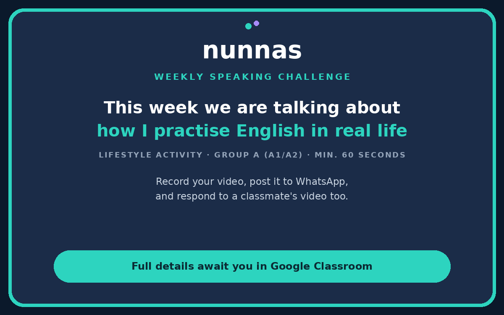

Complete all five tasks below before the deadline. Completa las cinco tareas de abajo antes de la fecha límite.
Grammar practicePráctica de gramática
Was/were and the past simpleWas/were y el pasado simple
This week you will practice was/were and the past simple to describe what happened to patients with herpes zoster (shingles). Esta semana practicarás was/were y el pasado simple para describir lo que les pasó a pacientes con herpes zóster (culebrilla).
Nurses use was/were and the past simple to report what happened earlier in a shift, such as when symptoms started and when medicine was given, so the team has a clear and accurate timeline. Las enfermeras usan was/were y el pasado simple para informar lo que pasó antes en el turno, como cuándo empezaron los síntomas y cuándo se dio el medicamento, para que el equipo tenga una cronología clara y precisa.
- Was/were for past states
- The patient was in pain yesterday. The blisters were red on Monday.
- Past simple, regular (-ed) and irregular
- The nurse checked the rash. He took his antiviral medicine at 8 a.m.
- Negatives: wasn't/weren't with be, didn't + base verb with other verbs
- The rash wasn't on her face. She didn't feel any pain last night.
- Questions: Was/Were + subject? Did + subject + base verb?
- Was the pain strong? When did the rash start?
- Review the grammar summary above before you start.
- Open the form.
- Answer the questions.
- Revisa el resumen gramatical de arriba antes de empezar.
- Abre el formulario.
- Responde las preguntas.
Reading comprehensionComprensión de lectura
Mr. Ramos and herpes zosterEl señor Ramos y el herpes zóster
This week you will read about Mr. Ramos, a patient who developed herpes zoster (shingles), and how the clinic team diagnosed and treated him. Esta semana leerás sobre el señor Ramos, un paciente que desarrolló herpes zóster (culebrilla), y cómo el equipo de la clínica lo diagnosticó y lo trató.
- Open the Google Forms quiz.
- Read the patient case story carefully.
- Read each question carefully before answering.
- Answer the questions using the text to support your answers.
- Abre el cuestionario de Google Forms.
- Lee la historia del caso del paciente con atención.
- Lee cada pregunta con atención antes de responder.
- Responde las preguntas usando el texto para apoyar tus respuestas.
WritingEscritura
A progress note about your shiftUna nota de evolución sobre tu turno
This week you will write a progress note that describes what happened during your shift when a post-operative patient developed shingles. Esta semana escribirás una nota de evolución que describe lo que pasó durante tu turno cuando un paciente postoperatorio desarrolló culebrilla.
- Download the Word template.
- Read the case notes on page 1.
- Write your note on page 2.
- Email your completed template to luke@nunnas.care. Put your name in the subject line.
- Descarga la plantilla de Word.
- Lee las notas del caso en la página 1.
- Escribe tu nota en la página 2.
- Envía tu plantilla completa por correo a luke@nunnas.care. Escribe tu nombre en el asunto.
Remember to attach your completed file to the email before you send it. Recuerda adjuntar tu archivo completo al correo antes de enviarlo.
Listening comprehensionComprensión auditiva
A nurse educator explains herpesUna educadora de enfermería explica el herpes
This week you will listen to a nurse educator explain herpes simplex and herpes zoster (shingles), including their signs, treatment, and infection control. Esta semana escucharás a una educadora de enfermería explicar el herpes simple y el herpes zóster (culebrilla), incluyendo sus síntomas, su tratamiento y el control de infecciones.
- Open the audio. You can pause and replay as many times as you need.
- Open the Google Forms quiz and answer the questions.
- Use what you heard to support your answers.
- Abre el audio. Puedes pausar y volver a reproducirlo las veces que necesites.
- Abre el cuestionario de Google Forms y responde las preguntas.
- Usa lo que escuchaste para apoyar tus respuestas.
Weekly speaking challengeReto semanal de expresión oral
How I practise English in real lifeCómo practico inglés en la vida real

This week, tell us how you practise English outside of class homework. Share your ideas and learn new ideas from your classmates! Esta semana, cuéntanos cómo practicas inglés fuera de la tarea de clase. ¡Comparte tus ideas y aprende nuevas ideas de tus compañeros!
Your taskTu tarea
Record a video (minimum 60 seconds). Answer these questions: Graba un video (mínimo 60 segundos). Responde estas preguntas:
- How do you practise English at home? (For example: music, films, series, apps, books, talking with friends)
- When do you practise?
- What is your favourite way? Why?
- ¿Cómo practicas inglés en casa? (Por ejemplo: música, películas, series, aplicaciones, libros, hablar con amigos)
- ¿Cuándo practicas?
- ¿Cuál es tu forma favorita? ¿Por qué?
Useful phrasesFrases útiles
- I practise English by…
- I like to… because…
- I practise every day / at the weekend / in the evening.
- My favourite way is…
Peer responseRespuesta a un compañero
Watch one classmate's video. Reply with one idea you want to try, or ask a question. Mira el video de un compañero. Responde con una idea que quieres probar, o haz una pregunta.
Homework creditCrédito de tarea
For full credit towards your Nunnas score, you must: Para recibir el crédito completo en tu puntuación Nunnas, debes:
- Post your video in the community WhatsApp group.
- Respond to one classmate's video this week.
- Publicar tu video en el grupo de WhatsApp de la comunidad.
- Responder al video de un compañero esta semana.